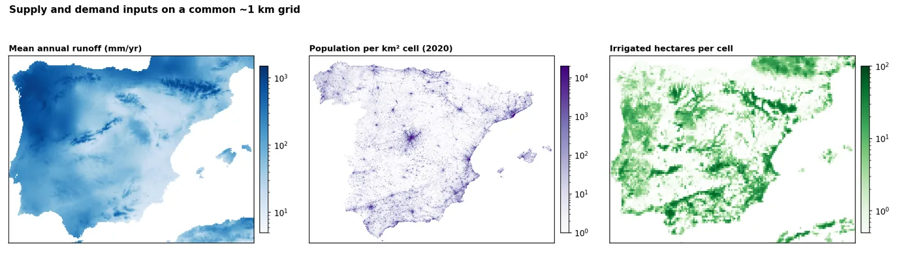
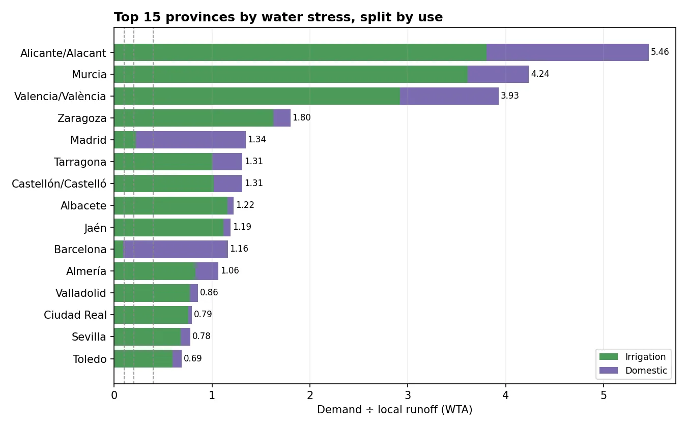

问题
水资源管理者、农户和投资者想知道哪些地区的需水量已经超过了本地产水，以及原因是什么。要在全国范围内一致地回答这个问题，各地必须使用相同的数据和相同的规则。
我做了什么
- 估算供水：用 TerraClimate 径流（1991–2020 年平均，约 4 km），按每个格网的真实面积换算成立方米。
- 估算生活需水：用 WorldPop 2020 人口，按每人每天 0.2 m³ 计算。
- 估算灌溉需水：用 FAO 灌溉面积图，按每公顷每年 4,000 m³ 计算。
- 把所有数据放到同一个 1 km 网格上且不改变总量。人口和面积只做求和或按面积拆分，从不拉伸或插值。
- 计算每个省的压力比（WTA取水与可用水比：年需水量除以本地产水量。超过 0.4 即为高压力。），并测试每个假设变化时结果如何变化。
结果显示了什么

西班牙全国需水量约为本地产水的四分之一，已经超过“中高压力”线，而且分布极不均匀。东南部（阿利坎特、穆尔西亚、瓦伦西亚）的需水量是本地产水的四到六倍，几乎全部用于灌溉。马德里和巴塞罗那的压力来自小面积上的数百万人口。大西洋沿岸的北部水量充足。

结果有多可靠？
- 只计算了本地产水。上游流入的河水、跨流域调水、地下水和海水淡化都未计入，所以东南部和下游省份的压力看起来比实际供水情况更大。
- 灌溉定额影响最大。在每公顷 3,000 到 6,000 m³ 之间，全国比值从 0.19 变到 0.34，但东南部在所有情景下都处于高压力。
- 年平均值掩盖了干旱，而缺水恰恰发生在干旱时。
可以交付什么
- 任意国家或地区的压力图和分省表
- 不同用水假设下的情景分析
- 可与您自己的数据结合的网格化供需图层
- 一份简明报告，说明哪些地区的压力是确定的，哪些取决于假设